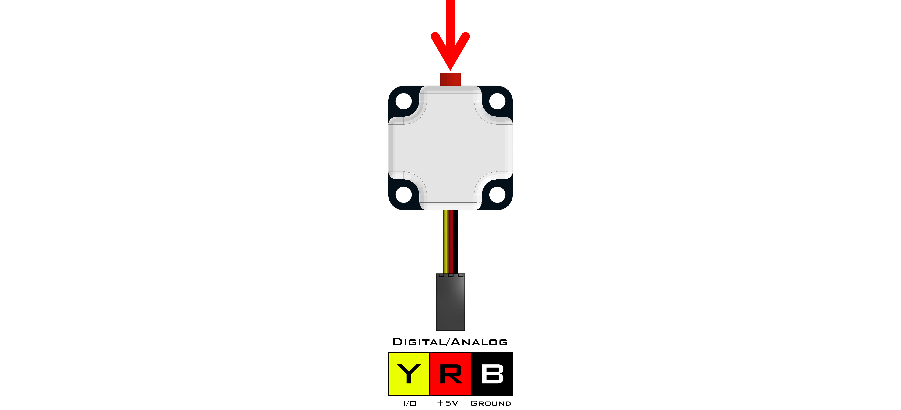
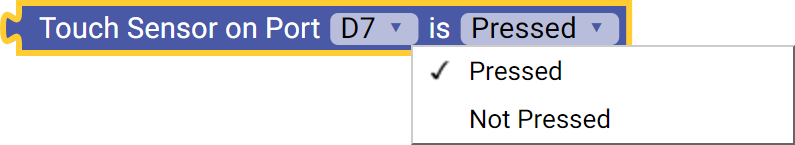
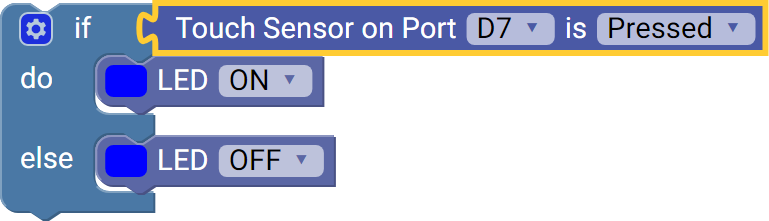

Touch Sensor (45-2007)
The Touch Sensor can be used for an array of different tasks including object detection, a counter, a standard push button and many more. The sensor can be attached to either an analog or digital port and contains a built-in LED which indicates when the sensor is activated. When the button is pressed, the value returned is 1. When the button is not pressed, the value returned is 0.
- Connect via digital port D0 - D7.
List of available blocks:

Pressed
The Touch Sensor can be used as a toggle or limit switch.
- Can be read as either Pressed or Not Pressed.
Block:

Code Produced:
Setup:
touch_D7 = Fusion.digital(f, f.D7)Code:
touch_D7.read()==1Example:

Code:
import Fusion f = Fusion.driver() touch_D7 = Fusion.digital(f, f.D7) if touch_D7.read()==1: f.setLED(f.BLUE, 1) else: f.setLED(f.BLUE, 0)
If any problems arise
Contact Modern Robotics, Inc. at support@modernroboticsinc.com with a detailed description of the steps you have taken and observations you have made.
Email Subject: Fusion Blockly Touch Sensor